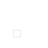

PHASE-FIELD IMAGE RECONSTRUCTION
Edge-aware
Cahn–Hilliard
inpainting.
An evolving interfacial coefficient for the completion of binary structures.

+0.0304
Junctions
Mean Dice difference from CH
+0.0081
Multiscale structures
Mean Dice difference from CH
+0.0773
Coefficient evolution
Retinal Dice difference from Frozen
24 synthetic cases · 56 retinal cases
6 methods
01 / RECONSTRUCTIONS
Compare every test case.
Drag the divider to compare methods.
Scores refer to the missing region.
02 / RECONSTRUCTION SCORES
Geometry and observation error.
Synthetic families
CHPM CH6 cases per family
Overall means
24 synthetic test cases
Paired comparisons
CHPM minus comparator · 95% percentile bootstrap intervals · 20,000 resamples
Complete reconstruction scores 80 cases × 6 methods
03 / INTERFACIAL COEFFICIENT
Adaptation during reconstruction.
The coefficient decreases with the
smoothed gradient magnitude.
Coefficient controls
Updating the coefficient increases mean Dice over the initial frozen field on both datasets.
Planar interface width
Fixed smoothing scale and positive diffusivity floor in two and three dimensions.
Mass balance04 / RETINAL VESSEL MASKS
Scratch width and reference annotation.
Source-image means
Scratch width
Two crops per source image at each width
Noisy synthetic observations
Clean-reference RMSE on observed pixels · 6 cases
05 / NUMERICAL RESULTS
Parameters, refinement and convergence.
Selected parametersDevelopment selection
λ₀ = 5 · ε = 1 pixel · n = 1 · Δt = 0.1
Complete development rankings
Development scores · CSV ↓Time-step and spatial refinementCH and CHPM
Further time-step refinement
Observed-region errors and TV accuracyContinuous phase fields
TV iteration
Discrete mass balance and convergenceSpatial and temporal tests
Manufactured solution
Temporal convergence
The numerical source defines the test fields, grids, forcing and integration tolerances.
CODE & RESULTS
The complete numerical record.
An executed notebook with the score tables, figures and all 480 reconstructions.